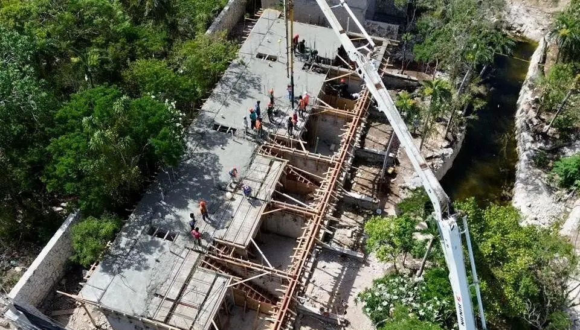

For developers who sell villas or townhouses in series in Costa Mujeres: 10 to 60 homes behind a gate, with internal roads, utilities, a clubhouse and pool, sold under a horizontal condominium regime. We build the infrastructure first, then the homes in phases that follow your sales, with prototype homes early and repeatable quality from the first to the last.

Lots, roads, setbacks, density and green areas the permit will accept.
Roads, water, sewer or treatment, power, lighting and drainage.
Gatehouse, wall, access control and CCTV.
Prototype first, then phased production with repeatable quality.
Amenities that sell: pool, gym, kids’ area, co-working.
Condominium regime, internal rules and handover to the HOA.
The infrastructure and amenities must be ready before the first buyers move in, but the homes can follow sales. We plan phases so cash flow from presales funds the next block, build two prototype homes early for marketing and buyer decisions, and keep a single specification so the 40th villa matches the first.
Density, road widths, green and donation areas, water supply and wastewater treatment are what the municipality and the water authority review. In much of the region there is no sewer, so a treatment plant is part of the project. We design and price it from the start so the lot count is real.
Costa Mujeres is Cancún’s newest coastal corridor: brand residences, condo towers next to the resorts and gated communities. Coastal setbacks, hurricane design and premium specs push costs about 20% above downtown Cancún.
Licences are issued by the municipality of Isla Mujeres; we file the land use, construction licence with DRO and Civil Protection.
| Item | Cost |
|---|---|
| Villa or townhouse in series, standard, per m² | $17,000–$29,000 |
| Premium villa in series, per m² | $29,000–$46,000 |
| Infrastructure per lot (roads, water, sewer, power, lighting) | $300,000–$840,000 |
| Gatehouse, perimeter wall and access control | $2.4M–$7.2M |
| Clubhouse with pool and gym | $4.8M–$14.4M |
| 20-villa community (≈200 m² each, infrastructure and clubhouse) | $84M–$180M |
In Costa Mujeres: Commercial construction
Gated community construction in other towns: Playa del Carmen · Puerto Morelos · Cancún · Bacalar · Puerto Aventuras · Akumal · Chetumal
Related: Gated community construction
Commercial cost calculator · Plazas · Offices
Subdivision infrastructure
Send the plans or the lot; we visit, check land use and permits, and send a line-item budget. Reply in 2 minutes.
Quote on WhatsAppFideicomiso: how foreigners own coastal property · Buying land in Mexico: due diligence · Concierge construction service · Managing a build from abroad · Build or buy in Playa del Carmen? · How long a build takes in Mexico · Contractor stopped? Finishing a stalled build · Closing on property: process and costs · Where to build: area by area · Cost to build a house in Mexico · Land use, COS and CUS · Soils studies on limestone
Your review helps other owners decide, and helps us improve.
Write a reviewRead our Google reviews